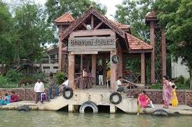

Bhavani Island
Bhavani Island is a beautiful river island located on the Krishna River in Vijayawada, Andhra Pradesh, India. It is one of the largest river islands in India and offers a perfect getaway with its scenic beauty and numerous recreational activities.
Location: Krishna River, Vijayawada, Andhra Pradesh, India
Activities: Boating, water sports, camping, and nature walks.
Attractions: Beautiful gardens, cottages, and a wide range of adventure activities.